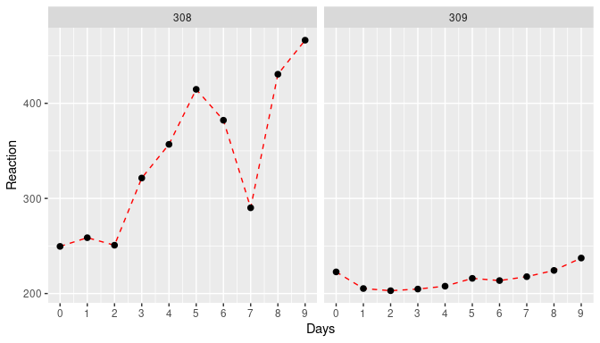

3 Statistical Data Analysis
Preamble
The focus of this part of the workshop is how to fit statistical models in R. We will not go into underlying mathematics but instead introduce key concepts in statistical data analysis and how to do this in R. The internet is full of free and useful tutorials and resources related to statistics and statistical modelling in R. If you prefer physical books instead of computer screens, here is a list of recommendations:
What is a statistical model?
Now that we are experts in handling and visualising data in R, we can enter the beautiful world of statistical data analysis or statistical modelling. But first we need to answer the simple question: what is a statistical model? Here is one definition:
A statistical model is a mathematical model that embodies a set of statistical assumptions concerning the generation of sample data and similar data from a larger population. It represents, often in considerably idealized form, the data-generating process. (taken from Wikipedia)
and another one:
Statistical modeling helps data scientists approach data analysis in a strategic manner, providing intuitive visualizations that aid in identifying relationships between variables and making predictions. (taken from heavy.ai)
At this point this may not make much sense to you, but hopefully things should become clearer as we go along with this part of the workshop. In fact, we have already tapped into some of these concepts in the previous sections.
Descriptive vs. inferential statistics
The first thing we need to do is clarify the distinction between descriptive and inferential statistics. In simple terms, the former deals with the quantitative and/or visual description of a sample taken from the population, whereas the latter tries to make inferences about the properties of a population based on this sample. And this is an important point to remember: we usually never know the entire state of the population (or the underlying probability distribution that generated the data), we only have access to a (usually significantly smaller) sample of it. And statistics will help us to get a sense of how well this sample might represent the population and hence the uncertainty attached to any inferences we wish to make about it.
\(~\)
3.1 Descriptive statistics
As defined earlier, descriptive statistics is concerned with the quantitative and/or visual description of a data sample. Here we distinguish two cases: (i) a univariate analysis, where we describe a single variable, for example by its central tendency (e.g. mean or median) and dispersal (e.g. variance or quartiles), and (ii) multivariate analysis, where our data sample consist of more than one variable and where we are interested in the relationship between pairs of variables (e.g. correlation or covariance).
3.1.1 Univariate analysis
You are probably already familiar with most of the concepts dealt with in this section. We therefore only briefly touch upon some of them, showing how to do generate descriptive statistics in R. But first of all we will load required libraries and generate some data we wish to analyse.
library(tidyverse)
# set a seed for random number generator
set.seed(31072023)
# generate random data from a normal distribution
normSample <- rnorm(50, mean = 10, sd = 1)
# generate random data from a Poisson distribution
poisSample <- rpois(50, lambda = 4)
# generate random data from an exponential distribution
expSample <- rexp(50, rate = 0.2)
# put into a data.frame for later use
sampleDF <- data.frame(Normal = normSample,
Poisson = poisSample,
Exponential = expSample)Without going into any further detail, let’s have a quick look at the data and see how they are distributed.
# plot the density dsirtibutions
ggplot(sampleDF) +
geom_density(aes(x = Normal, fill = 'Normal'), alpha = 0.4) +
geom_density(aes(x = Poisson, fill = 'Poisson'), alpha = 0.4) +
geom_density(aes(x = Exponential, fill = 'Exponential'), alpha = 0.4) +
labs(fill = 'Distribution') +
theme(legend.position = 'top')Mean vs. median
As you will know, the mean and the mediam are two very different statistics. The first is the average value of a data sample, i.e. \(\mu = 1/n \sum y_i\) (with \(y_i\) being individual data points or values of your sample), whereas the median separates the lower half and upper half of a data sample (i.e. is the value in the middle if you were to order all values form smallest to biggest). How much these two differ, however, depends on how the data is distributed. To demonstrates this, let’s calculate both and compare for different distributions
# sample based on normal distribution
print(c(mean(normSample), median(normSample)))## [1] 9.863772 9.811931# sample based on normal distribution
print(c(mean(poisSample), median(poisSample)))## [1] 4.46 4.50# sample based on normal distribution
print(c(mean(expSample), median(expSample)))## [1] 5.446247 3.070014We can see that for the first two samples, both the mean and median are fairly similar. For the sample based on an exponential distribution, however, they are very different. In order to understand why this is the case, we have to look at how the data in each data sample are spread. Specifically, we will look at the variance / standard deviation, interquartile range, skewness and kurtosis.
3.1.1.1 Standard deviation
The standard deviation (SD) is a measure of the dispersal of a set of values and how much these values vary from the sample mean. A low standard variation means that most values are close to the mean, whereas a high standrad deviation means that values are spread far way from the mean (which in itself should give you an indication of the usefulness of using the mean to describe your samples in the first case). Relatedly, the variance is the square of the standard deviation. Mathematically, the standard deviation, usually denoted \(\sigma^2\), is given as \[ \sigma^2 = \frac{1}{n} \sum (y_i - \mu)^2 \]
However, it is much easier to understand visually, here demonstrated by two normal distributions with the same mean but one with SD=1 and one with SD=4
data.frame(SD1 = rnorm(10000, sd = 1),
SD4 = rnorm(10000, sd = 4)) %>%
ggplot() +
geom_density(aes(x = SD1, fill = 'SD=1'), alpha = 0.3) +
geom_density(aes(x = SD4, fill = 'SD=4'), alpha = 0.3) +
geom_vline(xintercept = 0, col = 'blue', linetype = 'dashed') +
labs(x = '',
fill = '') +
theme(legend.position = 'top')Now let’s return to our previous data and compare the spread of each of our sample and see if this might have an influence on the observed difference between the mean and the median.
# sample based on normal distribution
print(c(mean(normSample), median(normSample), sd(normSample)))## [1] 9.863772 9.811931 1.091936# sample based on normal distribution
print(c(mean(poisSample), median(poisSample), sd(poisSample)))## [1] 4.460000 4.500000 1.991922# sample based on normal distribution
print(c(mean(expSample), median(expSample), sd(expSample)))## [1] 5.446247 3.070014 6.942839This is interesting. The standard deviation of the sample based on the Poisson distribution is twice as high as the one based on the normal distribution, and the one based on the exponential distribution even seven times as high. Based on this, it is unlikely to explain our previous observations.
Interquartile range
Another measure of the spread of data is the so-called interquartile range, or IQR for short. The IQR is defined as the difference between the 75th percentile (third quartile, or Q3) and the 25th percentiles of the data (lower quartile, or Q1). Therefore, the IQR = Q3 − Q1. In simpler terms, the Q1 is the median of the \(n\) smallest values and Q3 is the median of the \(n\) largest values.
We have already come across quartiles when we produced box-and-whisker plots, where the boxes show the median (Q2) and interquartile range (Q1 and Q3) and the lower and upper whiskers are defined as \(Q1 - 1.5 \times IQR\) and \(Q3 + 1.5 \times IQR\), respectively.
ggplot(sampleDF) +
geom_boxplot(aes(x = 1, y = Normal), fill = 'green', alpha = 0.4) +
geom_boxplot(aes(x = 2, y = Poisson), fill = 'blue', alpha = 0.4) +
geom_boxplot(aes(x = 3, y = Exponential), fill = 'red', alpha = 0.4) +
scale_x_continuous(breaks = c(1, 2, 3),
labels = c('Normal', 'Poisson', 'Exponential')) +
labs(x = 'Distribution',
y = 'Value') +
theme(legend.position = '')From this we can already see that the IQR for the Poisson sample is bigger than the normal one, and the exponential one even bigger. In R we can easily calculate the IQR as
# sample based on normal distribution
print(c(mean(normSample), median(normSample), sd(normSample), IQR(normSample)))## [1] 9.863772 9.811931 1.091936 1.571149# sample based on normal distribution
print(c(mean(poisSample), median(poisSample), sd(poisSample), IQR(poisSample)))## [1] 4.460000 4.500000 1.991922 3.000000# sample based on normal distribution
print(c(mean(expSample), median(expSample), sd(expSample), IQR(expSample)))## [1] 5.446247 3.070014 6.942839 4.804575The keen observer will have also noted that the difference between Q1 and Q2 for the exponential sample is much smaller than the difference between Q2 and Q3. That is, looking at the interquartile range cam indicate skewness of the data, as well as potential outliers i.e. data points that are below \(Q1 - 1.5 \times IQR\) or above \(Q3 + 1.5 \times IQR\).
Skewness
Skewness tells us whether the data is symmetric or asymmetrically distributed, an we can distinguish between a positive skew, where the right tail of the distribution is longer, and negative skew, where the left tail is longer.
The R library moments provides useful functions to measure the shape of a distribution. Let’s use this here and see whether it agrees with our assessment by eye
# if you do not have this library, install it with install.packages("moments")
library(moments)
# calculate skewness of normal-based samples
skewness(normSample)## [1] 0.258172# calculate skewness of normal-based samples
skewness(poisSample)## [1] 0.4429934# calculate skewness of normal-based samples
skewness(expSample)## [1] 3.448168The results are (almost) as expected. In fact, we see that the samples based on the exponential distribution are by far the most skewed. And this offers one explanation for why the mean and median differs so much: although the bulk of the data lies on the left hand side, the long tail to the right has a significant effect on the mean, such that it is no longer representative of the average value of a data sampled from this distribution (i.e. most values would be smaller than the mean).
Note, although the skewness for the samples based on the normal distribution is also positive, the value is very small. The same goes for the ones based on the Poisson distribution. What shall we do with this information? I.e. is there evidence that the they are all skewed and hence sufficiently different from a normal distribution? Thankfully the moments package provides us with the tool to check this statistically, which we will demonstrate when talking about kurtosis.
Kurtosis
The kurtosis of a distribution is a measure of whether or not it is heavy-tailed or light-tailed relative to a normal distribution:
- the kurtosis of a normal distribution is 3
- if the kurtosis is <3, this means that it has fewer and less extreme outliers than the normal distribution
- if the kurtosis is >3, this means that it has more outliers than the normal distribution.
Note: some formulars substract 3 from the kurtosis, resulting in either negative or positive values (with the normal distribution being 0)
The moments package also provides the functionality to calculate the kurtosis of a data sample. For our data this looks like
# calculate skewness of normal-based samples
kurtosis(normSample)## [1] 2.175165# calculate skewness of normal-based samples
kurtosis(poisSample)## [1] 3.083975# calculate skewness of normal-based samples
kurtosis(expSample)## [1] 17.42198Once again, the last data sample stands out by having a kurtosis much greater than 3, meaning it has far more outliers than would be expected if the data came from a normal distribution.
As mentioned earlier, moments offers a statistical test (the so-called Jarque-Bera Normality Test), which compare a given data sample to a normal distribution, with the Null Hypothesis (H\(_0\)) being that the data has a skewness and kurtosis that matches a normal distribution. Let’s put this to the test for our three samples.
# samples based on normal distribution
jarque.test(normSample)##
## Jarque-Bera Normality Test
##
## data: normSample
## JB = 1.9728, p-value = 0.3729
## alternative hypothesis: greater# samples based on Poisson distribution
jarque.test(poisSample)##
## Jarque-Bera Normality Test
##
## data: poisSample
## JB = 1.6501, p-value = 0.4382
## alternative hypothesis: greater# samples based on exponential distribution
jarque.test(expSample)##
## Jarque-Bera Normality Test
##
## data: expSample
## JB = 532.4, p-value < 2.2e-16
## alternative hypothesis: greaterAnd this provides evidence that the data sample based on the exponential distribution is statistically different from the normal distribution. On the other hand, there is no evidence to support our hypothesis that the sample based on the Poisson distribution is different from a normal distribution.
3.1.2 Multivariate analysis
In a multivariate analysis we are usually interested in the relationship between pairs of variables. Here we will briefly go through three commonly used methods to examine how two or more variables are related: contingency tables, Pearson correlation and Spearman rank correlation.
Contingency tables
Contingency tables are types of tables that display the frequency distribution of two variables against each other. As an example, say we had data from a clinical trial where patients were given either a treatment or a placebo and we are interested in how many people recovered from a disease within 5 days. In each arm we had 100 individuals and in the treatment group 73 individuals recovered and in the placebo group 64. In table format this would thus look like this
| teatment | recovered | disease |
|---|---|---|
| drug A | 73 | 27 |
| placebo | 64 | 36 |
We can see that there were more individuals who recovered in the treatment arm of the study. But how do we know that this was not due to chance? To answer this question we have to briefly tap into inferential statistics. And two common methods to provide functions to perform statistical tests on contingency tables: Pearson’s chi-squared test and Fisher’s exact test. We are not going into the details of where they differ but only mention that Fisher’s exact test is non-parametric, typically defined on a 2 x 2 contingency table, and, importantly, works with small sample sizes. The chi-squared (or \(\chi^2\)) test, on the other hand, works on more than one variables but usualy requires larger sample sizes.
Pearson’s chi-squared test
Perform a chi-squared test in R is straightforward using the chisq.test() function.
# define our contingency table
trial <- data.frame(recovered = c(73, 64),
disease = c(27, 36))
# add row names (not necessary)
row.names(trial) <- c('drug A', 'placebo')
# run test
chisq.test(trial)##
## Pearson's Chi-squared test with Yates' continuity correction
##
## data: trial
## X-squared = 1.483, df = 1, p-value = 0.2233Because data can come in different formats, here we provide an example of how to create a simple contingency table if your data only had the recorded outcome, for example as recovered / not recovered or recovered yes / no, stored in two columns, one for the treatment arm and one for the placebo arm.
# recorded outcome recovered yes / no
trialData <- data.frame(drug = c(rep('recovered',73), rep('not recovered', 27)),
placebo = c(rep('recovered',64), rep('not recovered', 36)))
# first turn into "tidy" format
trialData <- trialData %>%
gather(treatment, outcome, drug:placebo)
# create a contingency table
contTable <- table(trialData)
# perform chi-sq test
chisq.test(contTable)##
## Pearson's Chi-squared test with Yates' continuity correction
##
## data: contTable
## X-squared = 1.483, df = 1, p-value = 0.2233Fisher’s exact test
Fisher’s exact test work in a very similar way and directly on a 2 x 2 contingency table. For large sample sizes you will notice that both test give you similar test statistics, but as mentioned, it is more powerful when sample sizes are small.
# run Fisher's exact test on previously defined contingency matrix
fisher.test(contTable)##
## Fisher's Exact Test for Count Data
##
## data: contTable
## p-value = 0.2232
## alternative hypothesis: true odds ratio is not equal to 1
## 95 percent confidence interval:
## 0.3438828 1.2516078
## sample estimates:
## odds ratio
## 0.6589328As you will have noticed, this test works on and also reports odds ratio, which is a handy “side effect” of using this function.
Pearson correlation
The aim of the Pearson correlation coefficient, or most commonly referred to simply as correlation coefficient, is to establish a line of best fit through a dataset of two variables and measure how far away the data are from the expected values (the best fit line). Values range between +1 (perfect positive correlation) to -1 (perfect negative correlation), and any value in between. Here are some examples
## `geom_smooth()` using formula = 'y ~ x'To calculate the correlation coefficient in R between two vectors \(x\) and \(y\) we simply call the cor(x,y) function. And if we are further interested in whether the correlation (or lack of it) is statistically significant we can use the cor.test(x,y) function.
ggplot and add a linear regression line (remember geom_smooth()?). Then test whether there is a correlation between the two variables and if so, test whether this is statistically significant.
Spearman’s rank correlation
In comparison to Pearson’s correlation, Spearman’s rank correlation is a non-parametric measure of how the ranking of two variables are correlated. In fact, the Spearman correlation is equal to the Pearson correlation between the rank values of two variables. So instead of comparing the values, here we compare their ranks, or their indices when ordered from smallest to largest. As before, the values for Spearman’s rho (\(\rho\)) can range from -1 to +1. Without providing any more detail, here is an example of how to calculate Spearman’s rho in R
Age <- c(9, 11, 1, 7, 6, 5, 10, 3, 4, 4)
OD <- c(478, 755, 399, 512, 458, 444, 716, 399, 491, 456)
# use the same function as before but define method = 'spearman'
cor(Age, OD, method = 'spearman')## [1] 0.8597561# and test for significance
cor.test(Age, OD, method = 'spearman')## Warning in cor.test.default(Age, OD, method = "spearman"): Cannot compute exact
## p-value with ties##
## Spearman's rank correlation rho
##
## data: Age and OD
## S = 23.14, p-value = 0.001424
## alternative hypothesis: true rho is not equal to 0
## sample estimates:
## rho
## 0.8597561Correlation vs. causation
Beware: even a very high correlation between two variables does not infer causality - causality can only be inferred through careful experimental design in a well-controlled setting. A good example how looking purely at correlation can be misleading is this one (taken from Spurious Correlations)
\(\rho = 0.947\)!
\(~\)
3.2 Linear Models (LM)
3.2.1 Simple linear regression
In situations when analysing data, we are interested in exploring the relationship between a single response variable and one or multiple explanatory variables (predictors). This can be done by fitting a linear model. In fact, we have already come across this in earlier sections of this workshop; here we will provide more information on what is unde the hood and how to do perform linear modelling in R.
The term linear in linear models refers to the fact that there is a linear, or straight line, relationship between a predictor, \(x\), and the response \(y\). In other words, we can write \[ y = \beta_0 + \beta_1 x \] where \(\beta_0\) is the so-called intercept, i.e. the value of \(y\) when \(x=0\), and \(\beta_1\) is the gradient, which describes by how much \(y\) varies with increasing or decreasing values of \(x\).
What can be seen form the above graph is that the data points are not all on top of the regression line but spread above and below it. What this means is that an individual data point, \(y_i\), can be described by the linear relationship \[y_i = \beta_0 + \beta_1 x_i + \epsilon_i\] where \(\epsilon_i\) is the deviation, or (residual) error, between the best line fit and the actually observed value \(y_i\).
One on the key assumptions of a linear model is that all the \(\epsilon_i\)’s are normally distributed with a mean of 0 and some standard deviation \(\sigma\). In mathematical terms, the linear regression model is therefore defined as \[ \begin{align} y_i &= \beta_0 + \beta_1 x_i + \epsilon_i \\ \epsilon_i &\sim \mathcal{N}(0, \sigma^2) \end{align} \]
\(\epsilon\) is also commonly referred as the noise term. This is because the response variable has usually some uncertainty associated with it (e.g quantifying gene expression using microarrays or RNA-seq, etc.).
The general idea behind linear regression is to find the best fit line which minimises, or absorbs, the total (residual) noise. We are not going into the mathematical intricacies but rather show you how this is done in R, together with the general workflow of linear regression
- infer the model parameters \(\beta_0\) and \(\beta_1\)
- check the model fit
- interpret the significance of the estimated parameters
3.2.2 Linear regression in R
To show you how easy it is to linear regression in R we first create a fake dataset, which contains data of the height and weight of \(N=100\) individuals randomly sampled from a population
N <- 100
height <- runif(N, min = 135, max = 195)
weight <- 0.48 * height + rnorm(N, mean=0, sd=7)
sampleData <- data.frame(height = height,
weight = weight)
ggplot(sampleData, aes(x = height, y = weight)) +
geom_point() +
labs(x = 'height (cm)',
y = 'weight (kg)')Judging by eye we would be confident to declare that there is a (linear) relationship between the height and weight of an individual. So let’s fit a linear regression model and check whether this is indeed the case (in a statistical sense). To do this in R we will use the lm() function (please read the documentation for full details). This function requires a formular that describes the relationship between the predictor or explanatory variable (here height) and the response variable (here weight), which is given in the form response ~ explanatory, or in our case weight ~ height. With this, R will try to fit the following model
\[ weight_i = \beta_0 + \beta_1 \times height_i + \epsilon_i \]
And here is how this is done
# fit linear model and assign to object 'fit'
fit <- lm(weight ~ height, data = sampleData)
# print output
print(fit)##
## Call:
## lm(formula = weight ~ height, data = sampleData)
##
## Coefficients:
## (Intercept) height
## 8.8537 0.4204The output of interest are the two numbers (Intercept)= 8.8537, which is our \(\beta_0\) term, and weight= 0.4204, which is our \(\beta_1\) term.
So far so good; but how do we get the regression line? There are, in principle, two ways: either we calculate this by hand using the beta-terms we just obtained, or we use the predict() function (please see R documentation for further details).
# define the x-range for our regression line
bestFit <- data.frame(height = c(135, 195))
# Option 1: calculate the y-values by hand
bestFit["weight"] <- 5.0613 + 0.4471 * bestFit$height
# Option 2: use the predict() function
bestFit["weight"] <- predict(fit, newdata = bestFit)
ggplot(sampleData, aes(x=height, y=weight)) +
geom_point() +
geom_line(data=bestFit, aes(x=height, y=weight), col = 'blue', linewidth = 1)Note: this is essentially what
geom_smooth(method = 'lm')would have done for us!
3.2.2.1 Using the summary() function
Above the called print(fit) to obtain the fitted parameters of our model. However, if you check carefully in the Environment tab in RStudio, you will see that fit contains a lot more information. And this can be summarised in a much more informative fashion using the summary() function
summary(fit)##
## Call:
## lm(formula = weight ~ height, data = sampleData)
##
## Residuals:
## Min 1Q Median 3Q Max
## -13.2130 -5.0512 -0.6079 4.6114 24.7020
##
## Coefficients:
## Estimate Std. Error t value Pr(>|t|)
## (Intercept) 8.85369 7.45411 1.188 0.238
## height 0.42043 0.04554 9.232 5.63e-15 ***
## ---
## Signif. codes: 0 '***' 0.001 '**' 0.01 '*' 0.05 '.' 0.1 ' ' 1
##
## Residual standard error: 7.234 on 98 degrees of freedom
## Multiple R-squared: 0.4651, Adjusted R-squared: 0.4597
## F-statistic: 85.23 on 1 and 98 DF, p-value: 5.627e-15Let’s go through this line-by-line
Call
This just states the arguments that were passed to thelm()function. Remember it’sresponse ~ explanatory.Residuals
Some basic stats about the residuals (i.e the differences between the model fit and the observed data points). It is easier to plot a histogram of the residuals (shown in the next section), but these basic stats can already give us an indication of whether we have a symmetric distribution with zero mean (i.e we want the median to be close to zero, the third quartile (Q3) to be roughly equal to -Q1 (first quartile) and the max to be approximately -min).Coefficients
Estimate
(Intercept)= 8.8537 andweight= 0.4204 kg/cm are our regression parameters.Std. Error
The standard errors for the two inferred parameters. They tells us how confident we are in our estimates: if the standard error is comparable or greater than the actual parameter estimate itself then that point estimate should not be trusted. We can also show the confidence intervals for the model parameters to highlight their uncertainty using theconfint()function:
confint(fit, levels=0.95)## 2.5 % 97.5 % ## (Intercept) -5.938749 23.646134 ## height 0.330056 0.510808t valueandPr(>|t|)
This is the result of a hypothesis testing against the null hypothesis that the coefficient is zero.
Residual standard error
The square root of the residual sum of squares / degrees of freedom (here 98 = 100 (data points) - 2 (parameters needed for the regression line))Multiple R-squared
The \(R^2\) statistic, which is also referred to as as the coefficient of determination is the proportion of the total variation that is explained by the regression, i.e.total variation = regression (explained) variation + residual (unexplained) variation
In regression with a single explanatory variable, this is the same as the Pearson correlation coefficient squared.F-statistic
The F-statistic can be used to assess whether the amount of variation explained by the regression (\(M_1\)) is statistically significantly different compared to the null model (\(M_0\)), which in this case corresponds just taking the mean of the data. Large values of the F-statistic correspond to cases where the model fit is better for the more complex model compared to the null model. This test can be used to generate a P-value to assess whether the model fit is statistically significantly better given a pre-defined level of significance.
3.2.3 Model checking
The next step in linear (or any statistical) modelling is the concept of model checking. In theory, we could fit any model to our data simply by changing our assumptions about how the response and predictor variables are related. What we would like to do, however, is to make robust inferences, and for this we must check our model, which essentially boils down to checking whether our assumptions are reasonable.
The main assumption in our model was that the residuals (the differences between the data points and the regression line) are normally distributed around 0. We can easily check whether this is the case
hist(fit$residuals)We can see that the residuals are fairly evenly distributed and centered around 0, which is a good sign!
R also provides us with some easy tools for further model diagnostics, which can be called simply through
#setting up a 2x2 plot grid
par(mfrow=c(2,2))
# plot model diagnostics
plot(fit, pch = 20, cex = 0.5)What do these plot tell us about the model fit, though?
Residuals vs Fitted
The first plot, Residuals vs Fitted, checks that the variance is constant along the fitted line and that there is no systematic pattern whereby the errors get bigger or smaller as dependent on the fitted values. In our case, everything seems to be OK, but here are some (extreme) examples where this is not the case:

Normal Q-Q
A Q–Q plot, or quantile-quantile plot, compares two probability distributions by plotting their quantiles against each other. If the two distributions are similar, then the points should fall approximately on the identity line \(y = x\). In our case, we are plotting the quantiles of the residuals against their assumed distribution, which is the Normal distribution, and see that there is nothing to worry about (which we should know already from the histogram above).
Here is an example when things go wrong (i.e. when our linear assumption is violated):
Residuals vs Leverage
The last plot examines the influence of individual data points on our inference. Ideally, all points should equally contribute to the fit. In some cases we might find outliers, which have an above leverage on the fitted line, which can be measured by *Cook’s distance’. An extreme example is shown here

3.2.4 Prediction
Making predictions about unknown or unobserved data is the key benefit of statistical modelling. In fact, we have already used this to overlay a regression line onto our data by using the predict() function. Going back to our original example, let’s say we want to know the average weight for an individual who is 187cm tall. Note, the predict() function requires the new (to be predicted) data to be provided as a data.frame.
predict(fit, data.frame(height=187))## 1
## 87.47447Remember that our inference comes with a degree of uncertainties (because we can never know the true relationship based on a random sample from a population). A useful feature of the predict() function is that it can not only provide point estimates but also the confidence or prediction interval. Let’ say we are intereted in the 95% confidence interval for our prediction
predict(fit, data.frame(height=187), interval = 'confidence', level = 0.95)## fit lwr upr
## 1 87.47447 84.86624 90.08271and to obtain the 96% prediction interval
predict(fit, data.frame(height=187), interval = 'prediction', level = 0.95)## fit lwr upr
## 1 87.47447 72.88477 102.0642As you can see, the prediction interval is significantly larger than the confidence interval.
3.2.4.0.1 Confidence vs prediction interval
The confidence interval corresponds to the uncertainty surrounding our estimate of an average individual; it represents the uncertainty in the mean (i.e. in our case the regression line): \(y = \beta_0 + \beta_1 x\). In contrast, the prediction interval corresponds to the uncertainty surrounding an Individual observation.
Here we show you how both intervals can be computed and added to your (linear) regression line. Although these are often not shown they are important for conveying uncertainties.
newheight <- data.frame(height = seq(min(sampleData$height), max(sampleData$height), length.out=100))
newdata <- cbind(newheight, predict(fit, newdata = newheight, interval = 'confidence', level = 0.95)) %>%
rename(weight = fit)
ggplot(mapping = aes(x = height, y = weight)) +
geom_point(data = sampleData) +
geom_ribbon(data = newdata, aes(ymin=lwr, ymax=upr), fill = 'grey', alpha = 0.7) +
geom_line(data = newdata, col = 'blue', linewidth=1) … and now compare this to what geom_smooth() produces
ggplot(sampleData, aes(x = height, y = weight)) +
geom_point() +
geom_smooth(method = 'lm')They are the same - so now you know what geom_smooth() actually does!
3.2.5 Multiple linear regression
So far we have only considered a single explanatory variable, for example height. In most scenarios, however, we will have measured more than variable that could affect the outcome (response). In this case, our linear regression model extends to \[ y_i = \beta_0 + \beta_1 x_{1i} + \beta_2 x_{2i} + ... + \beta_n x_{ni} + \epsilon_i \]
Let’s make up some artificial data again to illustrate how to perform multiple linear regression in R. In this case we assume we had measure the total number of malaria episodes of 100 individuals aged between 1 and 10 living under different transmission intensities, measured as EIR and here for simplicity scaled to between 0 and 1. The model we are therefore trying to fit isFirst, create our new dataset
# create random data points for age and EIR
age <- runif(100, 1, 10)
EIR <- runif(100, 0, 1)
# assume some linear relationship between episodes and age and EIR plus noise
episodes <- 1.5*age + 4.1*EIR + rnorm(100, 0, 2)
# put into new data.frame
epiData <- data.frame(Age = age, Episodes = episodes, EIR = EIR)As a 3D-scatterplot this looks like this
library(scatterplot3d)
scatterplot3d(EIR, age, episodes, pch=19, ylab='Age (years)',
xlab='Transmission intensity', zlab='Malaria episodes', color='grey')Note how we now spread our data along a third dimension, i.e. we go from 2D to 3D and from a best fit line to a best fit hyperplane. Adding more explanatory variables will effectively spread the data even further in more dimensions, which makes it much harder to make robust inferences. Another key objective in statistical modelling is therefore to find the minimal adequate model.
To fit the model in R we use exactly the same function and terminology as before
fit <- lm(Episodes ~ EIR + Age, data = epiData)which we can project onto our 3D-scatterplot
hfig <- scatterplot3d(EIR, age, episodes, pch=19, ylab='Age (years)',
xlab='Transmission intensity', zlab='Malaria episodes', color='grey')
hfig$plane3d(fit, draw_polygon=T)
Next we are interested in the actual inference, i.e. the estimated parameters and some indication whether the two predictor variables (age and EIR) have a significant effect on the response (malaria episodes)
summary(fit)##
## Call:
## lm(formula = Episodes ~ EIR + Age, data = epiData)
##
## Residuals:
## Min 1Q Median 3Q Max
## -5.5632 -1.4060 -0.1187 1.3122 5.0491
##
## Coefficients:
## Estimate Std. Error t value Pr(>|t|)
## (Intercept) 0.21786 0.63882 0.341 0.734
## EIR 3.64104 0.71490 5.093 1.73e-06 ***
## Age 1.46793 0.08402 17.472 < 2e-16 ***
## ---
## Signif. codes: 0 '***' 0.001 '**' 0.01 '*' 0.05 '.' 0.1 ' ' 1
##
## Residual standard error: 2.051 on 97 degrees of freedom
## Multiple R-squared: 0.771, Adjusted R-squared: 0.7662
## F-statistic: 163.3 on 2 and 97 DF, p-value: < 2.2e-16As before, using the summary() function we get a summary of everything that’s important.
- the residuals appear symmetric and centered around 0
- the estimates for \(\beta_1\) (EIR) and \(\beta_2\) (age) are both positive and in magnitude as expected
- the estimate for \(\beta_0\) is \(\neq 0\) - what does this mean in practical terms? (we will revisit this at a later part of this workshop)
- the inferred effects of both EIR and age are statistically significant
- the adjusted R-squared value suggests that \(\sim 80\)% of the variation is explained by our model
This all seems really good, but we should still have a look at model diagnostics to see whether our model, or rather its underlying assumptions are valid.
par(mfrow=c(2,2))
plot(fit)The diagnostics all look reasonable and there is nothing that should make us doubt our model and assumed relationship between the response and explanatory variables. Note, these plots look exactly the same as in the simple linear model we have done earlier. This is because no matter how many (linear) predictors we put into our model, it is the behaviour of the residuals that we are interested in to make a statement about our model fit.
Calculate the predicted number of episodes plus 95% cofidence intervals for a 5 year old living in a transmission setting with EIR=0.5
Fit a new model
Episodes ~ Age. Look at the total variation explained and compare this to the full model; what would you conclude from this?Fit a new model
Episodes ~ EIR. Look at the estimate for the predictor variable and its associated P value and compare this to the ones based on the full model; what would you conclude from this?
3.2.6 Categorical explanatory variables
So far we have only dealt with numerical predictor variables. But what about non-numerical or categorical variables? Turns out that these are as easily dealt with as numerical one. To show how to perform linear regression with one or more categorical explanatory variables, we slightly modify our malaria episode dataset to include one extra variable: bednet, which will be an indicator of whether the child sleeps under a bednet or not.
# create random data points for age and EIR
bednet <- sample(c('yes', 'no'), 100, replace=TRUE)
# assume some linear relationship between episodes and age and EIR plus noise
episodes <- ifelse(bednet=='yes', 0, 2) + 1.5*age + 4.1*EIR + rnorm(100, 0, 2)
# put into new data.frame
epiData <- data.frame(Episodes = episodes,
Age = age,
EIR = EIR,
Bednet = factor(bednet))The model we are fitting now looks very similar to the one we fitted before
However, bednet is now a dummy variable that takes on a value of 0 (bednet = “no”) or 1 (bednet = “yes”). So essentially we are fitting two regression lines, one for those who sleep under a bednet and one for those who do not (because the \(\beta_3\) term will fall out).
In terms of fitting this model in R, nothing has changed and we do not need to explicitly specify if one or more of the variables is a categorical one, the lm() function will take care of this for us
fitCat <- lm(Episodes ~ EIR + Age + Bednet, data = epiData)
summary(fitCat)##
## Call:
## lm(formula = Episodes ~ EIR + Age + Bednet, data = epiData)
##
## Residuals:
## Min 1Q Median 3Q Max
## -3.379 -1.280 0.090 1.038 5.435
##
## Coefficients:
## Estimate Std. Error t value Pr(>|t|)
## (Intercept) 2.03776 0.57523 3.543 0.000614 ***
## EIR 4.68344 0.63706 7.352 6.52e-11 ***
## Age 1.54715 0.07706 20.076 < 2e-16 ***
## Bednetyes -3.26666 0.37840 -8.633 1.28e-13 ***
## ---
## Signif. codes: 0 '***' 0.001 '**' 0.01 '*' 0.05 '.' 0.1 ' ' 1
##
## Residual standard error: 1.825 on 96 degrees of freedom
## Multiple R-squared: 0.8272, Adjusted R-squared: 0.8218
## F-statistic: 153.1 on 3 and 96 DF, p-value: < 2.2e-16As you will notice from the summary, we now get an estimate for Bednetyes but not for Bednetno, what is going on? Becauase Bednet can only take on two values (0/1 or no/yes), one is taken as the reference case. That is, the intercept can now be interpreted as the average number of episodes for 0-year old living in a setting with an EIR=0. The estimate Bednetyes=-3.2667 tells you how much lower the expected number of episodes is for those who do sleep under a bednet.
predict() function, what is the predicted number of episodes for a 7-year old who sleeps under a bednet in a setting with an EIR of 0.8?
To show the effect of the extra categorical variable, we can plot the data once by ignoring the effect of Bednet and once by colouring in the data points by bednet use.
# very useful package for arranging multiple ggplots
library(patchwork)
# simply plot all data and ignore the effect of bednet use
# the lm function in this case would fit the model episodes ~ age + EIR
p1 <- ggplot(epiData, aes(x = Age, y = Episodes)) +
geom_point() +
geom_smooth(method='lm', se=F)
# create new dataset for predict()
newdata <- expand_grid(
Age = seq(1, 10, length.out = 10),
EIR = rep(median(epiData$EIR), 10),
Bednet = factor(c("no", "yes")))
newdata <- newdata %>%
mutate(Episodes = predict(fitCat, newdata))
p2 <- ggplot(mapping = aes(x = Age, y = Episodes, col = Bednet)) +
geom_point(data = epiData) +
geom_line(data = newdata, linewidth=1)
p1 + p2ggplot to plot Episodes against Age stratified (coloured) by Bednet and add regression lines using geom_smooth(method = 'lm'). What do you notice?
3.2.7 Interactions
Before we go on to the next big topics, Mixed Effect Models and Generalised Linear Models, we briefly show you how to consider possible interactions between two or more variables. That is, we have so far considered that the different predictors (e.g. age and EIR) had an independent effect on the response variable (e.g. episodes). There are situations where this is not the case and where the effect of one explanatory variable on the response depends on the value of another explanatory variable. We can estimate this dependency by including a so-called interaction term in our model.
To illustrate the importance of interactions and how to deal with them in our regression model, we will look at an example where our inferences can be very misleading when not accounting for possible interaction effects.
Let’s consider another made up example, in this case a disease, which we believe is influenced by temperature and rainfall. Furthermore, let’s assume rainfall is seasonal but temperature is not, such that rainfall can be represented as a categorical variable; the response variable will be disease incidence.
# create temperature and rinafall data
temperature <- runif(100, 28, 34)
rainfall <- sample(c('no', 'yes'), 100, replace = TRUE)
# define incidence as dependent on temperature, more so in rainy season
incidence <- ifelse(rainfall == 'yes',
101 + 2.7*temperature + rnorm(100, 0, 3),
184 + 0.0*temperature + rnorm(100, 0, 3))
# put everything into data.frame
incDF <- data.frame(incidence = incidence,
temperature = temperature,
rainfall = factor(rainfall))Note, in this example we have created data, where temperature appears to have an effect but rainfall does not.
If we were given this data we would usually start by visualising it, maybe with a boxplot showing the distribution of incidence for the off and on-season and a graph plotting incidence against temperature.
p1 <- ggplot(incDF, aes(x = rainfall, y = incidence, fill = rainfall)) +
geom_boxplot(alpha = 0.5)
p2 <- ggplot(incDF, aes(x = temperature, y = incidence)) +
geom_point() +
geom_smooth(method='lm')
p1 + p2It would be reasonable to conclude that rainfall does not seem to have a strong effect on incidence whilst there seems to be a clear and positive correlation between temperature and incidence. Next we would put this through our statistical modelling machinery and test whether our predictions are right.
fit <- lm(incidence ~ temperature + rainfall, data = incDF)
summary(fit)##
## Call:
## lm(formula = incidence ~ temperature + rainfall, data = incDF)
##
## Residuals:
## Min 1Q Median 3Q Max
## -8.8694 -1.7518 0.1403 2.6131 8.4056
##
## Coefficients:
## Estimate Std. Error t value Pr(>|t|)
## (Intercept) 147.0397 6.6019 22.272 < 2e-16 ***
## temperature 1.2146 0.2130 5.702 1.28e-07 ***
## rainfallyes -0.3287 0.7309 -0.450 0.654
## ---
## Signif. codes: 0 '***' 0.001 '**' 0.01 '*' 0.05 '.' 0.1 ' ' 1
##
## Residual standard error: 3.594 on 97 degrees of freedom
## Multiple R-squared: 0.2517, Adjusted R-squared: 0.2363
## F-statistic: 16.31 on 2 and 97 DF, p-value: 7.814e-07From this analysis we would conclude that temperature has a statistically significant effect on disease incidence (P<0.001), that rainfall does not have a statistically significant effect on disease incidence (P=0.91), and that would be the end of it. But what about the possibility that the effect of temperature is dependent on whether it is the on- or the off-season? That is, we are interested in the interaction term temperature \(\times\) rainfall. In the lm() function we can do this either adding the term temperature:rainfall to our previous model, or use the notation temperature*rainfall, which is short for temperature + rainfall + temperature:rainfall
fitInteraction <- lm(incidence ~ temperature*rainfall, data = incDF)
summary(fitInteraction)##
## Call:
## lm(formula = incidence ~ temperature * rainfall, data = incDF)
##
## Residuals:
## Min 1Q Median 3Q Max
## -8.3512 -1.1099 0.1151 1.5418 5.6447
##
## Coefficients:
## Estimate Std. Error t value Pr(>|t|)
## (Intercept) 198.1774 6.9041 28.704 <2e-16 ***
## temperature -0.4415 0.2232 -1.978 0.0508 .
## rainfallyes -93.4598 9.3205 -10.027 <2e-16 ***
## temperature:rainfallyes 3.0131 0.3011 10.007 <2e-16 ***
## ---
## Signif. codes: 0 '***' 0.001 '**' 0.01 '*' 0.05 '.' 0.1 ' ' 1
##
## Residual standard error: 2.528 on 96 degrees of freedom
## Multiple R-squared: 0.6338, Adjusted R-squared: 0.6223
## F-statistic: 55.37 on 3 and 96 DF, p-value: < 2.2e-16In the summary we can see one additional term: temperature:rainfallyes, and we see that this is highly significant (P<0.001). On the other hand, temperature does not appear to be a statistically significant predictor of incidence anymore! Beware: this would be the wrong conclusion because of the significance of the interaction term. I.e. removing temperature from our model, which would also remove the interaction term, would result in a much inferior model.
One other, and important, conclusion we can draw from this analysis is that interaction terms affect the slope of the regression line, which contrasts the additive effects we saw earlier and that only affected the intersect. And this also explains why adding linear regression lines with geom_smooth for stratified data we can get lines with different gradients.
ggplot(incDF, aes(x = temperature, y = incidence, col = rainfall)) +
geom_point() +
geom_smooth(method = 'lm')Note: in this example we considered interaction between a continuous and a categorical variable. Interactions between two continuous or two categorical variables are also possible and are treated in exactly the same way in
lm(). The only difference is the (biological) interpretation of the interaction term.
\(~\)
3.3 Mixed Effect Models (MEM)
One of the key assumptions of linear models is that the data is independent and identically distributed (i.i.d.). This means that our data sample is a true representation of the underlying population and that we have sampled without any (intentional or unintentional) bias. Sometimes this is not the case, however, meaning that there could be some systematic difference between some of our samples. We have come across a situation like this in the previous example, where samples taken during the rainy season showed a different pattern with temperature than those sampled during the off-season. We dealt with this by adding rainfall as a categorical variable into our model. This worked not only because there were only two possible levels for rainfall but also because we care about the identity of those levels, i.e. we wanted to estimate how incidence changes for rainfall = yes and rainfall = no. In other cases we might still want to account for underlying differences in our data by including a categorical variable we believe is having an influence but without caring about their identity. These variables are referred to random effect variables, as opposed to fixed effect variables that we considered so far. And models that include random and fixed effects are known as mixed effect models or random effect models.
- Fixed effects are (continuous or categorical) exploratory variables that we believe have an effect on the response and that we are interested in making conclusions about. Their effects is constant (fixed) across individuals.
- Random effects are categorical variables with many levels that are themselves drawn from a population of possible levels. Although they are believed to have an influence on the response, we are not interested in their identity.
Here we only briefly touch upon mixed effect models and how to analyse them in R using the lme4 package and by means of the sleepstudy dataset that is provided by lme4, which contains experimental data on the effect of sleep deprivation on reaction time. The data file has three variables
Reaction: average reaction time (ms)Days: number of days of sleep deprivationSubject: subject number on which observation was made
You can find out more about this study through the help function ?sleepstudy.
# load library for mixed effect modelling
library(lme4)
# get a summary of the sleep study dataset
summary(sleepstudy)## Reaction Days Subject
## Min. :194.3 Min. :0.0 308 : 10
## 1st Qu.:255.4 1st Qu.:2.0 309 : 10
## Median :288.7 Median :4.5 310 : 10
## Mean :298.5 Mean :4.5 330 : 10
## 3rd Qu.:336.8 3rd Qu.:7.0 331 : 10
## Max. :466.4 Max. :9.0 332 : 10
## (Other):120# get the number of study participants
print(paste0("Number of participants: ",length(unique(sleepstudy$Subject))))## [1] "Number of participants: 18"From the data summary we see that there were 10 observations made for 18 individuals. Therefore, Subject fits our definition of a *random effect`: we believe that there is a difference between study participants but we do not care about the individuals themselves.
We can convince ourselves about the difference between study participants by plotting the data for two subjects:
How do we model this data? There are principally three approaches: (1) pool all the data and don’t care about individual-level differences, (2) add Subject as a fixed effect as well as the interaction term Days:Subject, and (3) treat Subject as a random effect. Here we are only going to compare (1) and (3) and leave (2) as an exercise.
Before we start we need to make some minor modification to the data. First, we want to make sure that Subject is being treated like a categorical and not a continuous variable. Second, the first two days (day 0 and day 1) were for adaptation and training, meaning that sleep deprivation started counting at day 2 so we discard the first two days and then recode to make sure we start with day 0.
sleep <- sleepstudy %>%
mutate(Subject = factor(Subject)) %>%
mutate(Days = Days - 2) %>%
filter(Days>=0)lmer() function (from the lme4 package) uses a very similar syntax as the by now familiar lm() function but where the model formula now takes on the form
response ~ fixed1 + fixed2 + ... + (ran1 + ran2 + ...| ran_factor1) + ...
That is, fixed effects (and their interactions) are entered exactly as before. New is the presence of the term (ran1 + ran2 + ...| ran_factor1), which represents the random effects associated with a particular random factor. For our dataset there are three possibilities for how the random effects might influence the response, given here together with the specific formula syntax:
- random intercepts only:
Response ~ Days + (1 | Subject) - random slopes only:
Response ~ Days + (0 Days | Subject) - random slope and intersect:
Response ~ Days + (Days | Subject)
The most reasonable model would be the last, which allows for both the intercept and the slope to vary between individuals. So let’s fit this model
fit_mm <- lmer(Reaction ~ Days + (Days|Subject), data = sleep)
summary(fit_mm)## Linear mixed model fit by REML ['lmerMod']
## Formula: Reaction ~ Days + (Days | Subject)
## Data: sleep
##
## REML criterion at convergence: 1404.1
##
## Scaled residuals:
## Min 1Q Median 3Q Max
## -4.0157 -0.3541 0.0069 0.4681 5.0732
##
## Random effects:
## Groups Name Variance Std.Dev. Corr
## Subject (Intercept) 958.35 30.957
## Days 45.78 6.766 0.18
## Residual 651.60 25.526
## Number of obs: 144, groups: Subject, 18
##
## Fixed effects:
## Estimate Std. Error t value
## (Intercept) 267.967 8.266 32.418
## Days 11.435 1.845 6.197
##
## Correlation of Fixed Effects:
## (Intr)
## Days -0.062The model summary now contains a lot more information. Let’s highlight the two most important sections.
3.3.0.1 Fixed effects
There are two fixed effects: (Intercept) and Days which tell us the average reaction time without any sleep deprivation and the increase in reaction time with each day of sleep deprivation. You will notice that compared to the simpler modelling framework, P values are not provided anymore, and there are various reasons as to why. However, if you wish to make statements regarding the statistical significance of these estimates, you can either look at the confidence intervals (based on parametric boostrapping)
confint(fit_mm, level=0.95)## Computing profile confidence intervals ...## 2.5 % 97.5 %
## .sig01 19.0979934 46.3366599
## .sig02 -0.4051073 0.8058951
## .sig03 4.0079284 10.2487351
## .sigma 22.4666029 29.3494509
## (Intercept) 251.3443396 284.5904989
## Days 7.7245247 15.1463328The ones you are most interested in are the two bottom ones, and as neither crosses 0 you can be sure that the effects are statistically significant.
The other option is to calculate P values from the t values (the underlying maths goes beyon the scope of this workshop)
tvals <- fixef(fit_mm) / sqrt(diag(vcov(fit_mm)))
2 * (1 - pnorm(abs(tvals)))## (Intercept) Days
## 0.00000e+00 5.75197e-10This again provides strong evidence for rejecting the null hypotheses that sleep deprivation does not effect reaction time.
3.3.0.2 Random effects
This part of the summary looks more unfamiliar and explaining each part of this is beyond this workshop, as it requires more indepth knowledge about variance and covariance matrices and stats in general. So the only part you might want to take a look at is the Variance of the two Groups entries Subject and Residual. This tells you how much of the total variance in your data is being absorbed by the random effects (on slope and intercept). In this case this amounts to \(\sim 61\)% (100% * (958.35 + 45.78)/(958.35 + 45.78 + 651.60)), meaning that inter-subject variation explain the majority of the ‘noise’ in your data.
If we are interested in the estimated random effects, these can be pulled out using ranef() (similar to fixef() for accessing estimates of the fixed effects)
ranef(fit_mm) ## $Subject
## (Intercept) Days
## 308 24.4992891 8.6020000
## 309 -59.3723102 -8.1277534
## 310 -39.4762764 -7.4292365
## 330 1.3500428 -2.3845976
## 331 18.4576169 -3.7477340
## 332 30.5270040 -4.8936899
## 333 13.3682027 0.2888639
## 334 -18.1583020 3.8436686
## 335 -16.9737887 -12.0702333
## 337 44.5850842 10.1760837
## 349 -26.6839022 2.1946699
## 350 -5.9657957 8.1758613
## 351 -5.5710355 -2.3718494
## 352 46.6347253 -0.5616377
## 369 0.9616395 1.7385130
## 370 -18.5216778 5.6317534
## 371 -7.3431320 0.2729282
## 372 17.6826159 0.6623897
##
## with conditional variances for "Subject"- Fit a linear regression model to the pooled data ignoring the effect of
Subjectand compare the estimated effect sizes. - Fit a linear regression model using
Subjectas a categorical fixed effect and compare the estimated effect sizes - Fit a mixed effect model as before but assume that
Subjectonly affects the intersect. How does this compare to the previous model with random slope and intersect?
3.3.0.3 Model checking
We need to be just as conscious of testing the assumptions of mixed effects models as we are with any other model. These assumptions include:
- Within-group errors are independent and normally distributed with mean zero and variance
- Within-group errors are independent of the random effects
- Random effects are normally distributed with mean zero
Two commonly used plots to check these assumptions are:
- A simple plot of residuals against fitted values, irrespective of random effects (note we have to do this “by hand” here):
plot(resid(fit_mm)-fitted(fit_mm))- Plotting the residuals against the fitted values, separately for each level of the random effect, using the
coplot()function:
coplot(resid(fit_mm) ~ fitted(fit_mm) | sleep$Subject)\(~\)